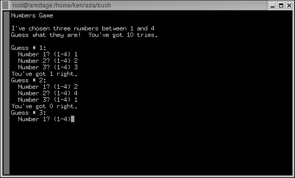

File : game.bush

#!/usr/local/bin/bush
-- game.bush
--
-- This is a number guessing game.
-- Demo program for the Bush shell
-- by Ken O. Burtch
procedure game is
n1 : constant integer := integer( numerics.rnd( 4 ) );
n2 : constant integer := integer( numerics.rnd( 4 ) );
n3 : constant integer := integer( numerics.rnd( 4 ) );
reply : integer;
match : integer;
begin
clear;
put_line( "Numbers Game" );
new_line;
put_line( "I've chosen three numbers between 1 and 4" );
put_line( "Guess what they are! You've got 10 tries." );
new_line;
for guess in 1..10 loop
put_line( "Guess #" & strings.image( guess ) & ":" );
put( " Number 1? (1-4)" );
reply := numerics.value( inkey & "" );
put_line( reply );
if reply = n1 then
match := 1;
else
match := 0;
end if;
put( " Number 2? (1-4)" );
reply := numerics.value( inkey & "" );
put_line( reply );
if reply = n2 then
match := @+1;
else
match := @+0;
end if;
put( " Number 3? (1-4)" );
reply := numerics.value( inkey & "" );
put_line( reply );
if reply = n3 then
match := @+1;
else
match := @+0;
end if;
if match = 3 then
put_line( "You've got the numbers right!" );
exit;
elsif guess = 10 then
put_line( "You're out of guesses." );
exit;
else
put_line( "You've got" & strings.image( match ) & " right." );
end if;
end loop;
new_line;
put( "The numbers were" ) @( n1 ) @( "," ) @( n2 ) @( " and" );
put_line( n3 );
new_line;
put_line( "Thanks for playing." );
end game;